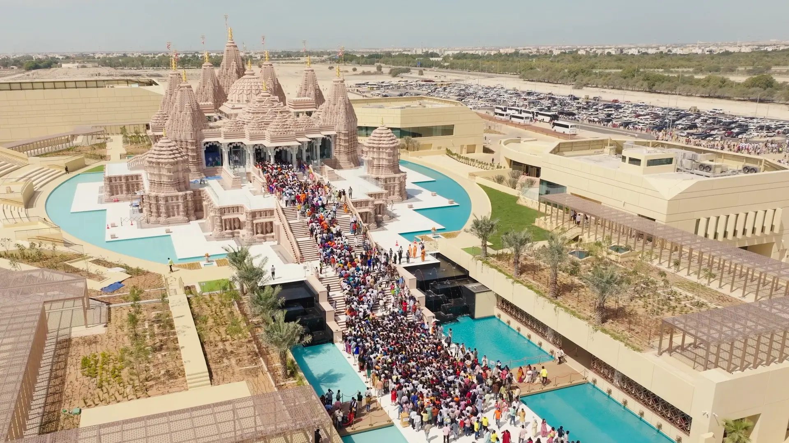

A BAPS Mandir is a place for worship where people come to pray, learn and also serve others. The word mandir also translated to temple. This temple serves many purposes including spiritual, educational, and social activities. BAPS is a Hindu spiritual organization, and these temples are located in many different countries. These temples are known for their intricate architecture and beautiful carvings.
Along with serving as a place of worship, BAPS Mandirs also play a vital role in the community by organizing various cultural and educational programs. This helps people learn more about Hindu traditions and values, as well as creating a sense of belonging and community. These temples teach many different values such as compassion, humility, and selfless service. Although, it is a hindu temple people from all different backgrounds are welcome to visit and participate in the activities. They can come learn about the art, history and enjoy the spiritual atmosphere of these temples.
| Activity | Description |
|---|---|
| Prayer Services | Daily prayers and weekly services are held to foster spiritual growth. |
| Community Events | Various cultural and social events are organized to engage the community. |
| Educational Programs | Classes and workshops are held to promote learning about Hindu culture and values. |
| Volunteer Opportunities | Community members are encouraged to participate in various service projects. |
